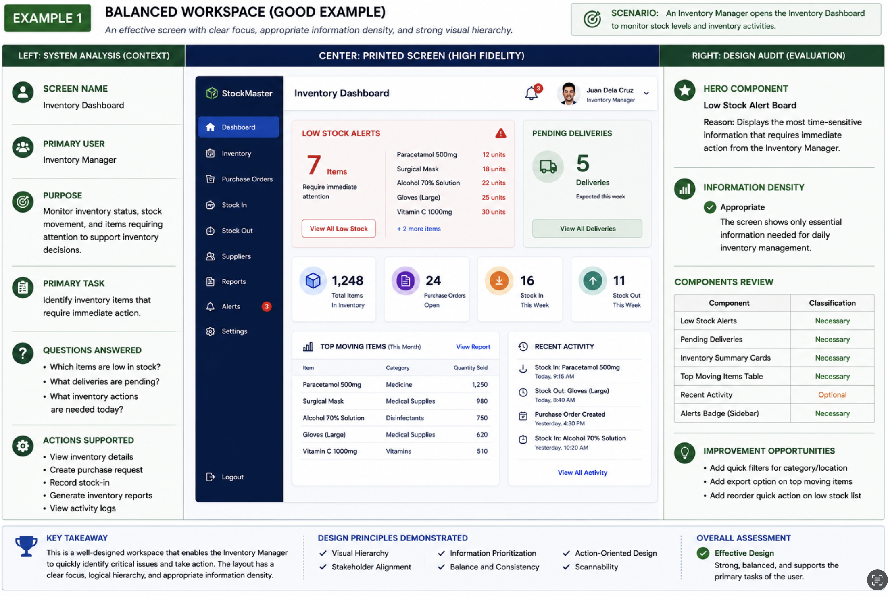
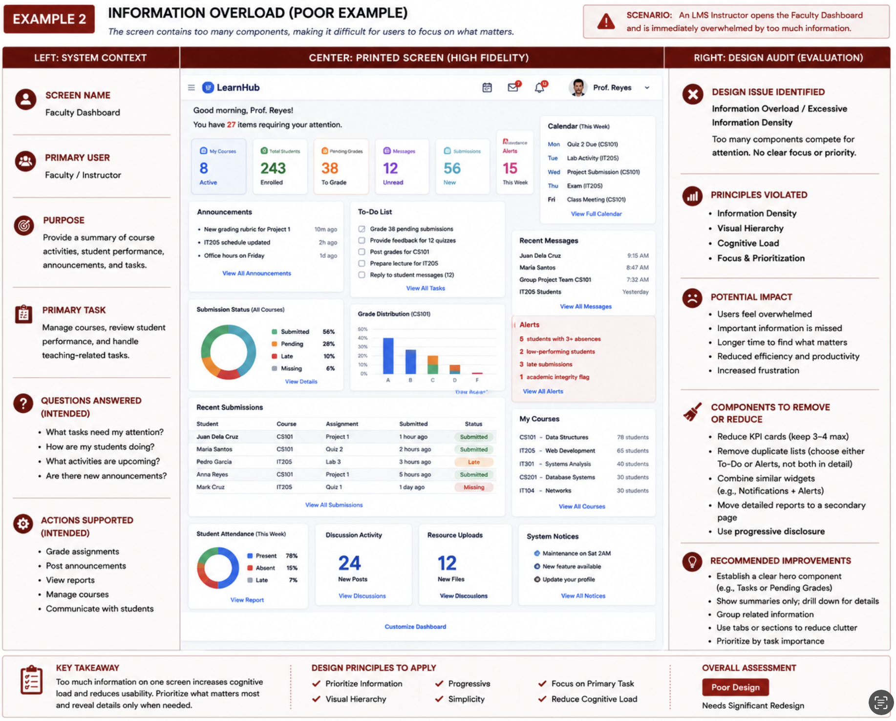
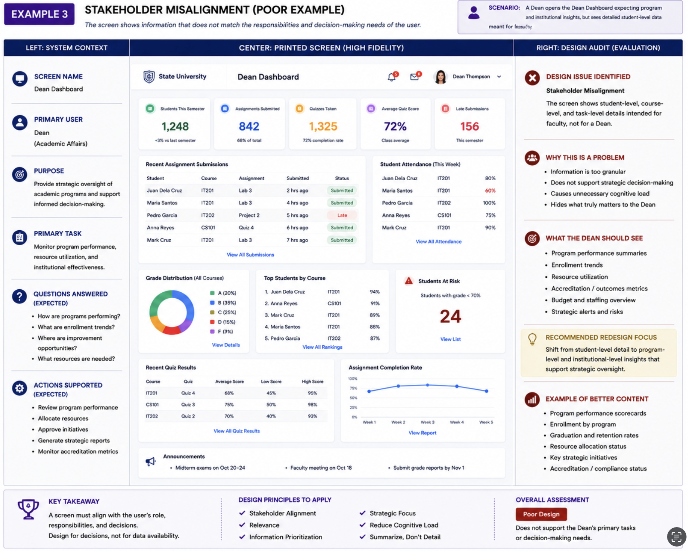
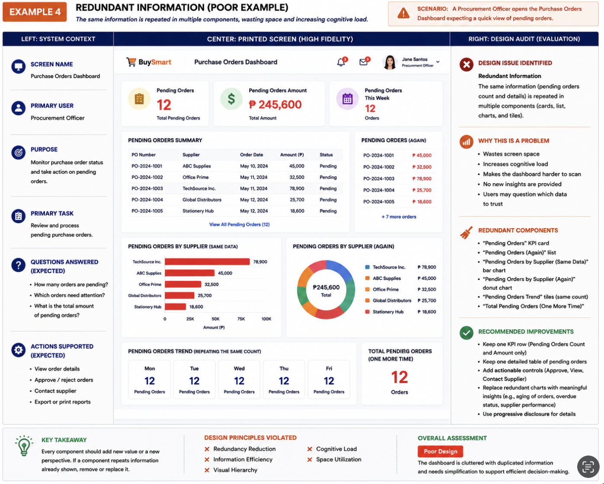
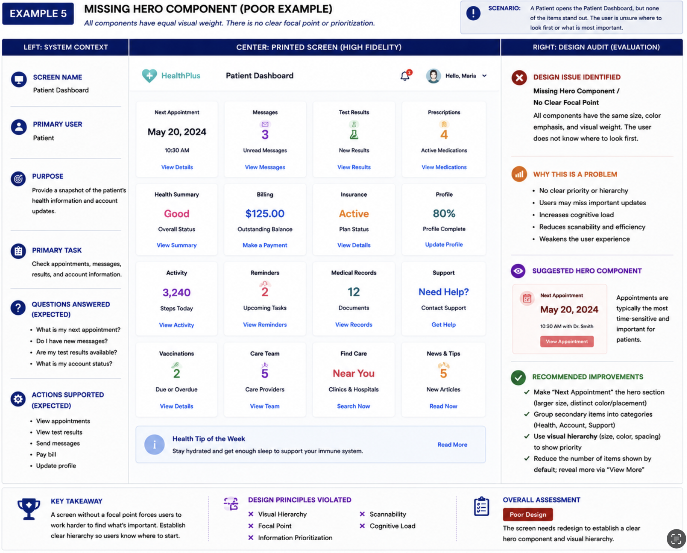
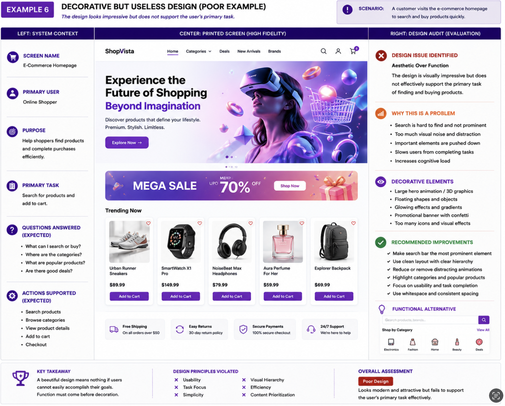
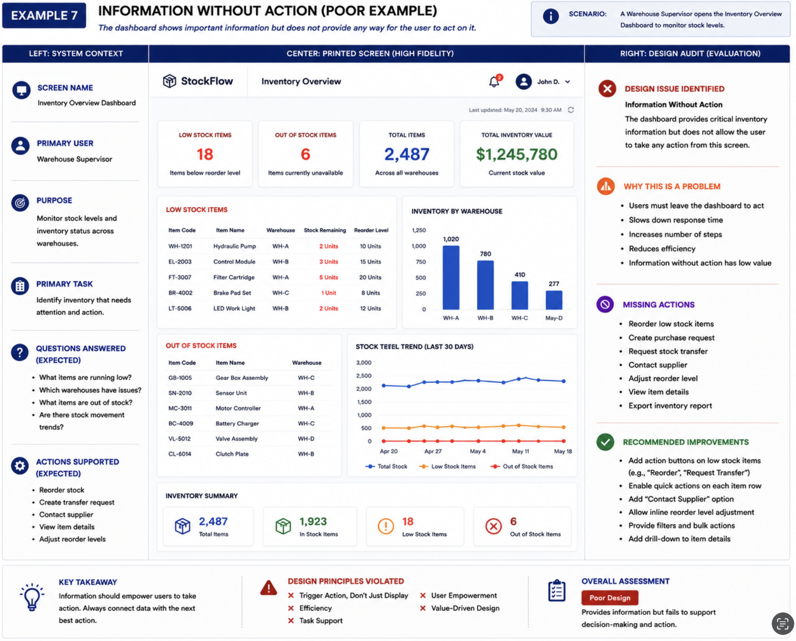
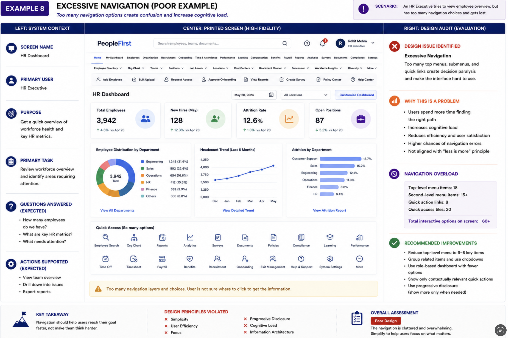
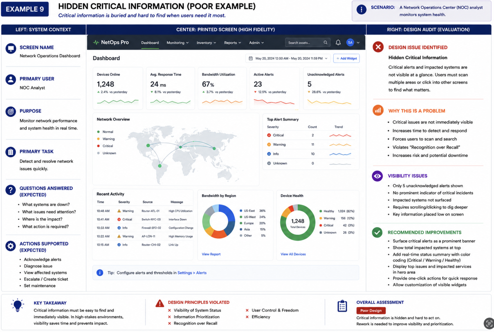
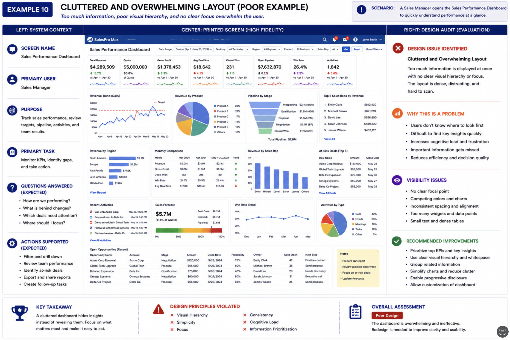

Cross-Platform Application Development
1.1 Introduction to Cross-Platform Development
Cross-platform development is the practice of building software that operates across multiple operating systems and device types from a single, unified codebase. Instead of maintaining separate Swift, Kotlin, and web codebases, teams author one application that renders appropriately everywhere.
1.2 Native vs Cross-Platform
| Aspect | Native | Cross-Platform |
|---|---|---|
| Codebase | Separate per platform | Single shared codebase |
| Dev Time | Longer — platform-specific skills | Faster — write once, run anywhere |
| Performance | Maximum native | Near-native with modern frameworks |
| Maintenance | Higher — parallel codebases | Lower — single source of truth |
| Deployment | Platform-specific builds | Multi-platform simultaneous release |
1.3 Modern Cross-Platform Frameworks
| Framework | Language | Performance | Best For |
|---|---|---|---|
| Flutter | Dart | Near-native (AOT) | Pixel-perfect custom UIs |
| React Native | JS / TS | Good (JSBridge) | JS-ecosystem teams |
| .NET MAUI | C# | High (.NET AOT) | Enterprise Windows teams |
| Ionic | HTML/JS/TS | Moderate (WebView) | Rapid web-to-mobile |
| PWA | HTML/CSS/JS | Browser-dependent | Lightweight web-first apps |
1.4 React – A JavaScript Library for UI
- Your code calls the library
- You control the flow
- High flexibility
- Gradual learning curve
- Framework calls your code (IoC)
- Framework controls the flow
- Lower flexibility
- Steeper upfront learning
- Component-Based Architecture — Self-contained, reusable UI blocks (like Lego bricks)
- Declarative Programming — Describe what the UI should look like; React decides how to update
- Virtual DOM — In-memory copy of the DOM; only minimal real DOM changes are applied
- Automatic Re-rendering — React handles UI updates when state changes
| Hook | Purpose | Triggers Re-render? |
|---|---|---|
useState | Track dynamic UI data | ✅ Yes |
useEffect | Side effects: fetch, timers, subscriptions | ❌ No |
useRef | Persist value without re-render; DOM access | ❌ No |
useContext | Read from React Context (avoid prop drilling) | ✅ On context change |
useMemo | Cache expensive computed values | ❌ No |
useCallback | Cache function references for child components | ❌ No |
| Aspect | React JS (Web) | React Native (Mobile) |
|---|---|---|
| Output | HTML/CSS DOM elements | Real native UI components |
| Styling | CSS | StyleSheet API (JS objects) |
| Layout | CSS Flexbox + Grid | Flexbox only (column default) |
| UI Elements | <div> <p> <button> | <View> <Text> <TouchableOpacity> |
| Navigation | React Router | React Navigation |
1.6 Application Architecture Fundamentals
| Layer | Responsibility |
|---|---|
| Presentation | Renders UI; handles user input. React components, Flutter widgets. |
| Application | Coordinates use cases; orchestrates calls between UI and business logic. |
| Business Logic | Domain rules independent of any framework. Pricing engines, validations. |
| Data Access | Abstracts data source (REST API, SQLite, cache). Repository pattern. |
| Database / Storage | Persists data: PostgreSQL, MongoDB, Redis, SQLite, Hive. |
Study each hook and its typical usage pattern:
// useState — tracks counter value; every setCount() triggers a re-render import { useState } from 'react'; function Counter() { const [count, setCount] = useState(0); // initial value: 0 return ( <div> <p>Count: {count}</p> <button onClick={() => setCount(count + 1)}>+</button> <button onClick={() => setCount(count - 1)}>−</button> </div> ); }
// useEffect — runs after render; [] = run ONCE on mount only import { useState, useEffect } from 'react'; function DataFetcher() { const [data, setData] = useState(null); useEffect(() => { // Runs on mount — fetch initial data fetch('/api/tasks') .then(r => r.json()) .then(d => setData(d)); return () => { /* cleanup on unmount */ }; }, []); // [] = mount only return <p>{data ? 'Loaded!' : 'Loading…'}</p>; }
// useRef — stores a value WITHOUT causing a re-render import { useRef } from 'react'; function FocusInput() { const inputRef = useRef(null); const focusField = () => { inputRef.current.focus(); // direct DOM access }; return ( <div> <input ref={inputRef} placeholder="Type here" /> <button onClick={focusField}>Focus</button> </div> ); }
| Phase | Description | Hook Used |
|---|---|---|
| Mount | Component appears in UI for the first time | useEffect(fn, []) |
| Render | Component function runs; produces JSX | useState (drives UI) |
| Update | State or props change triggers re-render | useState setter; useEffect([dep]) |
| Unmount | Component removed; cleanup runs | Return value of useEffect |
Click Run to mount and render the component, Update state (or type) to trigger an update and re-render, then Unmount to run cleanup. This built-in simulation uses plain JavaScript and works without an internet connection.
- Waiting for Run...
# Option A – Vite (Recommended for modern apps) npm create vite@latest my-react-app # Choose: Framework → React, Variant → JavaScript cd my-react-app npm install npm run dev # opens http://localhost:5173 # Option B – Create React App (Beginner-friendly, legacy) npx create-react-app my-app cd my-app npm start # opens http://localhost:3000
npx create-expo-app notes-app # scaffold blank template cd notes-app npm start # starts Metro Bundler # Scan QR with Expo Go on your phone
Use project constraints, not popularity, to justify an architectural choice. Change the inputs, then compare the recommendation with your own reasoning.
Discuss with a partner
- Which requirement could overturn the recommendation?
- What long-term maintenance cost does the choice create?
- When is a shared codebase not worth the trade-off?
User Interface and User Experience Design
2.1 UI vs UX Fundamentals
- Visual Hierarchy — guide the eye
- Layout and Spacing — grids, gutters, whitespace
- Color and Typography — brand identity
- Component Design — buttons, forms, cards
- User Research — interviews, usability tests
- Information Architecture — mental models
- Journey Mapping — every touchpoint
- Prototyping and Testing — Figma → feedback
2.2 Responsive Design Principles
| Device | Width Range | Layout | Common Components |
|---|---|---|---|
| Mobile | < 768px | Single-column stack | Bottom nav, hamburger menu |
| Tablet | 768 – 1024px | Two-column grid | Sidebar, collapsible panels |
| Desktop | 1025 – 1440px | Multi-column grid | Full navbar, dashboards |
| Large Desktop | > 1440px | Wide-layout content | Fixed sidebars, data grids |
<meta name="viewport" content="width=device-width, initial-scale=1.0">
2.3 Accessibility and Inclusive Design
Accessibility (a11y) is governed by WCAG 2.1 (W3C) with three conformance levels: A, AA, and AAA. In the Philippines, RA 7277 (Magna Carta for Disabled Persons) mandates accessible digital services.
| Concern | Requirement |
|---|---|
| Color Contrast | WCAG AA: 4.5:1 ratio for normal text; 3:1 for large text |
| Keyboard Navigation | All interactive elements must be keyboard-reachable with visible focus indicators |
| Alternative Text | Informative images need descriptive alt; decorative images use alt="" |
| ARIA Roles | role, aria-label, aria-describedby communicate meaning to screen readers |
| Typography | Body text ≥ 16px, line-height ≥ 1.5, line length 50–75 chars |
| Error Identification | Errors described in text (not color only); associated via aria-describedby |
2.4 Design Systems and Reusable Components
A design system is a single source of truth for a product's visual language. It combines a component library, style guide, and documentation.
- Design Tokens — Named variables:
primary-color: #2E75B6,spacing-unit: 8px - Component Library — Pre-built, documented UI components with state variants
- Layout Patterns — Approved grid systems and page templates
- Documentation & Governance — Guidelines on when and how to use components
/* Mobile-first approach */ .container { display: flex; flex-direction: column; /* stacked on mobile */ padding: 16px; } /* Tablet — 768px and above */ @media (min-width: 768px) { .container { flex-direction: row; padding: 24px; } } /* Desktop — 1025px and above */ @media (min-width: 1025px) { .container { max-width: 1200px; margin: 0 auto; padding: 32px; } }
/* ❌ BAD — non-descriptive, WCAG failure */ <button onClick={submit}>Click here</button> /* ✅ GOOD — self-describing, screen reader friendly */ <button onClick={submit} aria-label="Submit grade appeal"> Submit Grade Appeal </button> /* ✅ Icon-only button with aria-label */ <button aria-label="Delete task"> <TrashIcon /> </button>
A form uses light-gray text, placeholder-only labels, mouse-only clickable cards, and red borders as its only error signal. Choose the first correction you would make and explain why.
Discussion prompt: accessible by design
Why is responsive design not automatically accessible design? Give one example where an interface adapts to mobile width but still excludes a user.
State Management and Application Architecture
3.1 State Management Concepts
State is any data whose change causes the UI to update. Poorly managed state is the leading cause of hard-to-reproduce bugs.
| State Type | Description | Examples |
|---|---|---|
| UI State | Transient widget-level data; no persistence needed | Dropdown open, tab index, spinner |
| App State | Shared across multiple components/screens | Authenticated user, cart contents |
| Server State | Fetched from remote API; must be cached & synced | Product catalog, user feed |
| URL State | Current route and query parameters | Deep-linking, filter params |
useState— Local state; appropriate for UI state only- Provider / InheritedWidget — Flutter; low boilerplate; small-to-medium apps
- BLoC — Flutter; separates UI from logic via Streams; highly testable
- Redux / Zustand — React; centralized immutable store with actions and reducers
- MobX — Observable state that auto-re-renders; less boilerplate than Redux
3.2 Client-Side vs Server-Side Processing
- Input validation & form feedback
- UI rendering, animations
- Client-side routing
- Offline via Service Workers
- ⚠ Code is visible and reversible
- Authentication (JWT / OAuth 2.0)
- Authoritative business logic
- Database operations
- File processing, ML inference
- ✅ Secure and trusted
3.3 Architectural Patterns
| MVC | MVVM | |
|---|---|---|
| Layers | Model, View, Controller | Model, View, ViewModel |
| Data Flow | Controller mediates View ↔ Model | ViewModel exposes streams; View binds |
| Use Cases | Server-rendered web, REST backends | Mobile apps, React/Vue/Angular frontends |
| Testability | Controller logic unit-testable | ViewModel fully testable without UI |
| Examples | Laravel, Spring MVC, Django | Flutter (BLoC), Android Jetpack, Vue |
| Trade-off | Can lead to fat controllers | Learning curve for reactive bindings |
3.4 Scalability Considerations
- Add CPU, RAM, or storage to existing server
- Simple to implement
- Has physical limits
- Single point of failure
- Add more server instances with load balancer
- Requires stateless app design
- Sessions externalized to Redis
- Foundation for microservices
const [isOpen, setIsOpen] = useState(false); const [user, setUser] = useState(null); const [cart, setCart] = useState([]); // Immutable update pattern — ALWAYS spread to avoid mutation setCart(prev => [...prev, newItem]); // add item setCart(prev => prev.filter(i => i.id !== id)); // remove item
import { create } from 'zustand'; const useStore = create((set) => ({ count: 0, increment: () => set((s) => ({ count: s.count + 1 })), decrement: () => set((s) => ({ count: s.count - 1 })), })); // In any component: const { count, increment } = useStore();
import AsyncStorage from '@react-native-async-storage/async-storage'; // Save (always JSON.stringify arrays/objects) await AsyncStorage.setItem('NOTES_KEY', JSON.stringify(notes)); // Load on mount via useEffect useEffect(() => { const load = async () => { const raw = await AsyncStorage.getItem('NOTES_KEY'); if (raw) setNotes(JSON.parse(raw)); }; load(); }, []);
For each example, decide where its source of truth belongs. A correct design avoids duplication and unclear ownership.
Discuss the architecture
What bug can occur if server state is copied into multiple local component states? How would caching or a shared data layer change the design?
Systems Analysis and Information Systems Design
4.1 The Paradigm Shift
| Design Starting Point | Typical Outcome |
|---|---|
| Data-first — What fields do we have? | Information dump. Users manually filter and decide with no system support. |
| Screen-first — What pages do we need? | Beautiful mockup, broken workflow. UI looks good but doesn't match how users work. |
| Stakeholder-first — Who uses this and what do they need to accomplish? | Systems that reduce cognitive load, support decisions, and align with real processes. |
4.2 The 9-Level Systems Design Audit
Apply this audit to every screen, dashboard, and workflow you design. It separates information dumps from high-impact systems.
Start with the Stakeholder
Identify who uses the system. Different roles need different workspaces. Student ≠ Instructor ≠ Admin.
Goals Before Features
Stakeholder → Goals → Tasks → Information Needed → Interface. Every feature must trace to a goal.
Process Before Screen
Map workflows first. Identify bottlenecks, delays, redundancies, and automation opportunities.
Define the Core Inquiry
Every component must answer a specific question. If you can't state it, remove the component.
Appropriate Support Level
TPS (transactions) · MIS (monitoring) · DSS (decisions) · EIS (strategic). Match level to role.
Attention Density
Classify: Necessary · Helpful but Optional · Redundant. Remove redundant components immediately.
Visual Hierarchy
Primary concern visible within seconds. Hero section answers the single most important question.
Eliminate Redundancy
Removal test: if removing a component leaves the user with the same ability — remove it.
Feasibility + Actionable Insight
Verify every metric has a real data source. Transform: Data → Information → Knowledge → Action.
| Stage | Transformation | Example | Cognitive Load |
|---|---|---|---|
| Data | Raw Fact | Student Grade = 72 | HIGH — user decides alone |
| Information | Contextualized Fact | Grade below 75% passing threshold | MEDIUM — problem identified |
| Knowledge | Aggregated Impact | Underperforming in 3 prerequisite courses | LOW — pattern and severity clear |
| Action | Empowered Resolution | Notify instructor; recommend intervention | MINIMAL — system prescribes next step |
| Level | Purpose | Typical User | Example |
|---|---|---|---|
| TPS | Routine, repetitive tasks | Students, clerks | Registration forms, attendance entry |
| MIS | Monitoring and structured reporting | Instructors, dept. heads | Progress dashboards, grade reports |
| DSS | Analysis and semi-structured decisions | Program chairs | At-risk prediction, intervention tools |
| EIS | Strategic planning and oversight | Dean, VP Academic Affairs | Institutional dashboards, accreditation |
4.3 Web Design Audit Examples
Compare the balanced workspace with the poor examples below. Open any image to inspect the full-size design audit.










| Widget | Core Inquiry (L4) | Attention Density (L6) | Verdict (L8) |
|---|---|---|---|
| Total Users | How many users do we have? | Necessary (if role monitors growth) | ✅ Keep |
| Monthly Revenue chart | Is revenue trending up or down? | Necessary | ✅ Keep |
| Region pie chart | What proportion is each region? | Helpful — shows proportions | ⚠ Keep or move to drill-down |
| Region table | Same as pie chart | Redundant — same question, same data | ❌ Remove or move to drill-down |
| Latest Transaction | What happened most recently? | Optional — only if role monitors activity | ⚠ Secondary panel |
Evaluate a student progress dashboard by completing the first four audit decisions. The generated statement can guide a class critique.
Extend to Levels 6-9
- Which element deserves the most attention?
- What can be removed without losing decision value?
- How will raw data become an actionable recommendation?
Laboratory Exercise 1
Framework Options: React (web) · React Native with Expo · Flutter
5.1 Objective
Develop a fully responsive and interactive UI for your capstone project. Demonstrate mastery of responsive layout, dynamic component rendering, accessible design, and persistent local storage where applicable.
5.2 Detailed Requirements
- Login screen — email/password with client-side validation (required, email format, min password length)
- Registration screen — password confirmation validation
- Forgot Password link → static recovery screen
- Inline error messages — ARIA-announced for screen readers
- At least three data categories (activity, stats, notifications, or equivalent)
- Data from static JSON file or live API call
- At least one chart (bar, line, or doughnut)
- Apply at least one 9-Level Audit principle — define the core inquiry for each widget; ensure the hero section answers the primary question
- Web: hamburger drawer (mobile) ↔ persistent sidebar or top nav (desktop)
- React Native: bottom tab navigator (mobile); drawer navigator (tablet/desktop)
- Active route visually indicated; navigation state maintained on resize
- At least one modal dialog (confirmation, detail view, or form)
- At least one FlatList (RN) or mapped list/table (React Web) with dynamic data
- Loading state — skeleton screen or spinner during data fetch
- AsyncStorage to save and load data on app start
- Add, edit, delete must persist across restarts
- Toast or Alert confirmation after each mutation
- Web: renders at 375px, 768px, and 1280px — submit screenshots for all three
- React Native: tested on Android emulator and physical device via Expo Go
- Source Code — GitHub repo link or ZIP with README (setup, install, run)
- Screenshots — minimum 6: login, registration, dashboard, navigation (mobile & desktop), one dynamic component
- Technical Documentation (1–2 pages) — tech stack chosen, component architecture, known issues
| Criterion | Description | Points |
|---|---|---|
| Authentication Interface | Functional login/registration with client-side validation and accessible errors | 20 |
| Dashboard Interface | Renders dynamic data; applies 9-Level Audit (core inquiry per widget, hero defined) | 20 |
| Responsive Navigation | Adapts correctly mobile ↔ desktop; active route indicated | 20 |
| Dynamic Components + Storage | Modal, list, loading indicator; AsyncStorage persistence (RN track) | 20 |
| Technical Documentation | Organized source; README present; covers stack, architecture, issues | 20 |
| TOTAL | 100 | |
const validate = (email, password) => { const errors = {}; if (!email) errors.email = 'Email is required'; else if (!/\S+@\S+\.\S+/.test(email)) errors.email = 'Invalid email format'; if (!password) errors.password = 'Password is required'; else if (password.length < 8) errors.password = 'Minimum 8 characters'; return errors; }; // Accessible error rendering {errors.email && ( <span role="alert" aria-live="polite" className="error"> {errors.email} </span> )}
const [loading, setLoading] = useState(true); const [data, setData] = useState([]); useEffect(() => { fetch('/api/dashboard') .then(r => r.json()) .then(d => { setData(d); setLoading(false); }); }, []); return loading ? <Spinner /> // loading state : <Dashboard data={data} />; // data ready
/* Mobile — hamburger hidden, sidebar hidden */ .sidebar { display: none; } .hamburger { display: flex; } /* Desktop — sidebar visible, hamburger hidden */ @media (min-width: 1025px) { .sidebar { display: flex; } .hamburger { display: none; } }
Use this checklist before coding. Progress is stored only in this browser so you can return to the page later.
Before-lab discussion
Which rubric criterion is most likely to fail if it is postponed until the end? Explain what evidence you will capture while building.